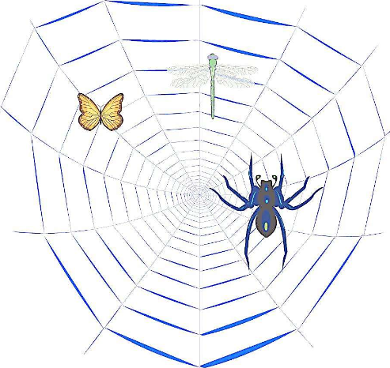
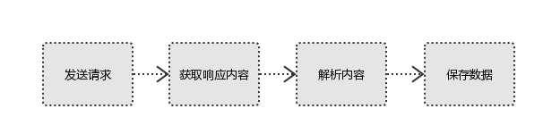
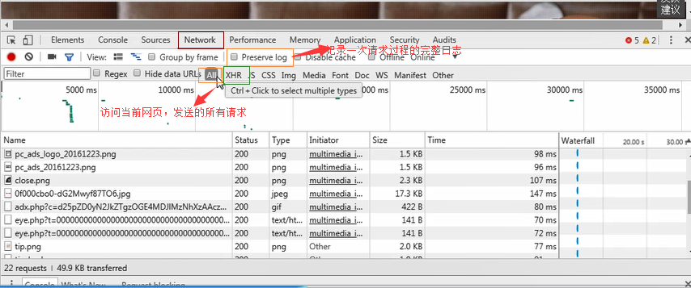
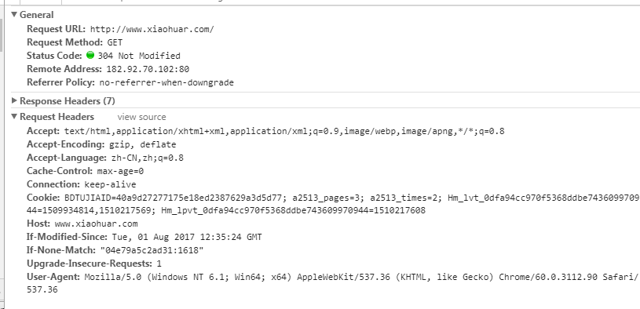
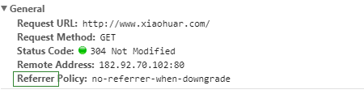

前言
简单来说互联网是由一个个站点和网络设备组成的大网，我们通过浏览器访问站点，站点把HTML、JS、CSS代码返回给浏览器，这些代码经过浏览器解析、渲染，将丰富多彩的网页呈现我们眼前；
一、爬虫是什么？
如果我们把互联网比作一张大的蜘蛛网，数据便是存放于蜘蛛网的各个节点，而爬虫就是一只小蜘蛛，
沿着网络抓取自己的猎物（数据）爬虫指的是：向网站发起请求，获取资源后分析并提取有用数据的程序；
从技术层面来说就是 通过程序模拟浏览器请求站点的行为，把站点返回的HTML代码/JSON数据/二进制数据（图片、视频） 爬到本地，进而提取自己需要的数据，存放起来使用；

二、爬虫的基本流程：
用户获取网络数据的方式：
方式1：浏览器提交请求--->下载网页代码--->解析成页面
方式2：模拟浏览器发送请求(获取网页代码)->提取有用的数据->存放于数据库或文件中
爬虫要做的就是方式2；

1、发起请求
使用http库向目标站点发起请求，即发送一个Request
Request包含：请求头、请求体等
Request模块缺陷：不能执行JS 和CSS 代码
2、获取响应内容
如果服务器能正常响应，则会得到一个Response
Response包含：html，json，图片，视频等
3、解析内容
解析html数据：正则表达式（RE模块），第三方解析库如Beautifulsoup，pyquery等
解析json数据：json模块
解析二进制数据:以wb的方式写入文件
4、保存数据
数据库（MySQL，Mongdb、Redis）
文件
三、http协议 请求与响应
Request：用户将自己的信息通过浏览器（socket client）发送给服务器（socket server）
Response：服务器接收请求，分析用户发来的请求信息，然后返回数据（返回的数据中可能包含其他链接，如：图片，js，css等）
ps：浏览器在接收Response后，会解析其内容来显示给用户，而爬虫程序在模拟浏览器发送请求然后接收Response后，是要提取其中的有用数据。
四、 request
1、请求方式：
常见的请求方式：GET / POST
2、请求的URL
url全球统一资源定位符，用来定义互联网上一个唯一的资源 例如：一张图片、一个文件、一段视频都可以用url唯一确定
url编码
https://www.baidu.com/s?wd=图片
图片会被编码（看示例代码）
网页的加载过程是：
加载一个网页，通常都是先加载document文档，
在解析document文档的时候，遇到链接，则针对超链接发起下载图片的请求
3、请求头
User-agent：请求头中如果没有user-agent客户端配置，服务端可能将你当做一个非法用户host；
cookies：cookie用来保存登录信息
注意： 一般做爬虫都会加上请求头



请求头需要注意的参数：
（1）Referrer：访问源至哪里来（一些大型网站，会通过Referrer 做防盗链策略；所有爬虫也要注意模拟）
（2）User-Agent:访问的浏览器（要加上否则会被当成爬虫程序）
（3）cookie：请求头注意携带
4、请求体
请求体
如果是get方式，请求体没有内容 （get请求的请求体放在 url后面参数中，直接能看到）
如果是post方式，请求体是format data
ps：
1、登录窗口，文件上传等，信息都会被附加到请求体内
2、登录，输入错误的用户名密码，然后提交，就可以看到post，正确登录后页面通常会跳转，无法捕捉到post
五、 响应Response
1、响应状态码
200：代表成功
301：代表跳转
404：文件不存在
403：无权限访问
502：服务器错误
2、respone header
响应头需要注意的参数：
（1）Set-Cookie:BDSVRTM=0; path=/：可能有多个，是来告诉浏览器，把cookie保存下来
（2）Content-Location：服务端响应头中包含Location返回浏览器之后，浏览器就会重新访问另一个页面
3、preview就是网页源代码
JSO数据
如网页html，图片
二进制数据等
六、总结
1、总结爬虫流程：
爬取--->解析--->存储
2、爬虫所需工具：
请求库：requests,selenium（可以驱动浏览器解析渲染CSS和JS，但有性能劣势（有用没用的网页都会加载）；）
解析库：正则，beautifulsoup，pyquery
存储库：文件，MySQL，Mongodb，Redis
3、爬获校花网
最后送给大家点福利吧
基础版：


import re import requests respose=requests.get('http://www.xiaohuar.com/v/') # print(respose.status_code)# 响应的状态码 # print(respose.content) #返回字节信息 # print(respose.text) #返回文本内容 urls=re.findall(r'class="items".*?href="(.*?)"',respose.text,re.S) #re.S 把文本信息转换成1行匹配 url=urls[5] result=requests.get(url) mp4_url=re.findall(r'id="media".*?src="(.*?)"',result.text,re.S)[0] video=requests.get(mp4_url) with open('D:\\a.mp4','wb') as f: f.write(video.content)
函数封装版
import re import requests import hashlib import time # respose=requests.get('http://www.xiaohuar.com/v/') # # print(respose.status_code)# 响应的状态码 # # print(respose.content) #返回字节信息 # # print(respose.text) #返回文本内容 # urls=re.findall(r'class="items".*?href="(.*?)"',respose.text,re.S) #re.S 把文本信息转换成1行匹配 # url=urls[5] # result=requests.get(url) # mp4_url=re.findall(r'id="media".*?src="(.*?)"',result.text,re.S)[0] # # video=requests.get(mp4_url) # # with open('D:\\a.mp4','wb') as f: # f.write(video.content) # def get_index(url): respose = requests.get(url) if respose.status_code==200: return respose.text def parse_index(res): urls = re.findall(r'class="items".*?href="(.*?)"', res,re.S) # re.S 把文本信息转换成1行匹配 return urls def get_detail(urls): for url in urls: if not url.startswith('http'): url='http://www.xiaohuar.com%s' %url result = requests.get(url) if result.status_code==200 : mp4_url_list = re.findall(r'id="media".*?src="(.*?)"', result.text, re.S) if mp4_url_list: mp4_url=mp4_url_list[0] print(mp4_url) # save(mp4_url) def save(url): video = requests.get(url) if video.status_code==200: m=hashlib.md5() m.updata(url.encode('utf-8')) m.updata(str(time.time()).encode('utf-8')) filename=r'%s.mp4'% m.hexdigest() filepath=r'D:\\%s'%filename with open(filepath, 'wb') as f: f.write(video.content) def main(): for i in range(5): res1 = get_index('http://www.xiaohuar.com/list-3-%s.html'% i ) res2 = parse_index(res1) get_detail(res2) if __name__ == '__main__': main()
并发版（如果一共需要爬30个视频，开30个线程去做，花的时间就是 其中最慢那份的耗时时间）

import re import requests import hashlib import time from concurrent.futures import ThreadPoolExecutor p=ThreadPoolExecutor(30) #创建1个程池中，容纳线程个数为30个； def get_index(url): respose = requests.get(url) if respose.status_code==200: return respose.text def parse_index(res): res=res.result() #进程执行完毕后，得到1个对象 urls = re.findall(r'class="items".*?href="(.*?)"', res,re.S) # re.S 把文本信息转换成1行匹配 for url in urls: p.submit(get_detail(url)) #获取详情页 提交到线程池 def get_detail(url): #只下载1个视频 if not url.startswith('http'): url='http://www.xiaohuar.com%s' %url result = requests.get(url) if result.status_code==200 : mp4_url_list = re.findall(r'id="media".*?src="(.*?)"', result.text, re.S) if mp4_url_list: mp4_url=mp4_url_list[0] print(mp4_url) # save(mp4_url) def save(url): video = requests.get(url) if video.status_code==200: m=hashlib.md5() m.updata(url.encode('utf-8')) m.updata(str(time.time()).encode('utf-8')) filename=r'%s.mp4'% m.hexdigest() filepath=r'D:\\%s'%filename with open(filepath, 'wb') as f: f.write(video.content) def main(): for i in range(5): p.submit(get_index,'http://www.xiaohuar.com/list-3-%s.html'% i ).add_done_callback(parse_index) #1、先把爬主页的任务（get_index）异步提交到线程池 #2、get_index任务执行完后，会通过回调函add_done_callback（）数通知主线程，任务完成； #2、把get_index执行结果（注意线程执行结果是对象，调用res=res.result()方法，才能获取真正执行结果），当做参数传给parse_index #3、parse_index任务执行完毕后， #4、通过循环，再次把获取详情页 get_detail（）任务提交到线程池执行 if __name__ == '__main__': main()
涉及知识：多线程多进程
计算密集型任务：使用多进程，因为能Python有GIL，多进程可以利用上CPU多核优势；
IO密集型任务：使用多线程，做IO切换节省任务执行时间（并发）
线程池
参考博客：
瞎驴http://www.cnblogs.com/linhaifeng/articles/7773496.html

Python 入门指南:http://www.jqhtml.com/9130.html